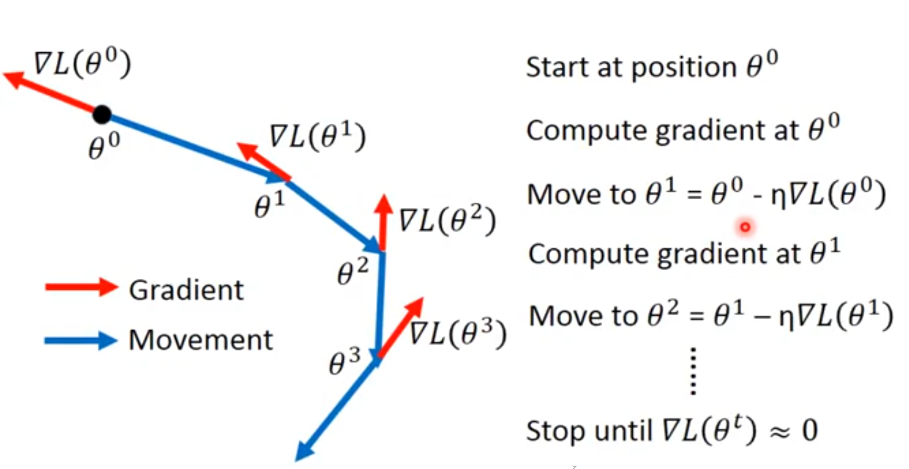
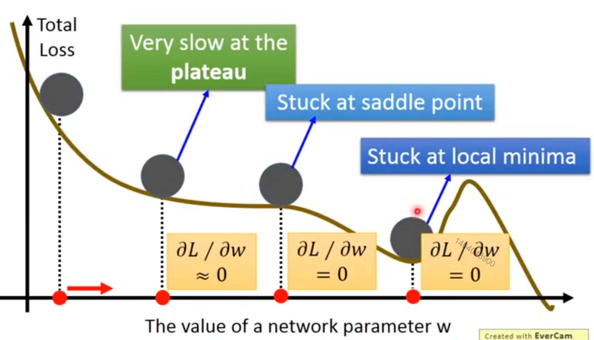

Introduction
数论
数论
几何级数
线性代数
范数
向量
特殊类型的矩阵和向量
Hessian矩阵
正交
特征分解
奇异值分解
迹运算
行列式
病态矩阵
共轭
高等数学
距离
平均值
空间
函数
导数
微积分
复数
凸优化问题
公式
jensen不等式
泰勒公式
欧拉公式
三角函数
指数衰减
数值计算
归一化和标准化
分类标签数字化
梯度下降法
牛顿法
带约束的优化
概率论
一些术语
概率分布
期望和方差
常见分布
混合分布
常用函数
有用的公式
最大似然估计
贝叶斯统计
信息论
熵
散度、交叉熵
几何()
维基百科 - 欧拉角
Published with GitBook
梯度下降法
一张图解释梯度下降法

实际使用过程中，梯度下降法可能会卡某这些地方：

分别是平坦点、鞍点、局部最小点。
因此这些点的偏导数为0。
results matching "
"
No results matching "
"